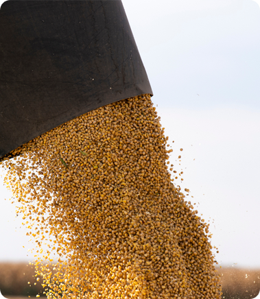

<div class="section-5">
    <div class="container">

        <h2 class="h2">Инновационная соя - мнение с полей</h2>

        <div class="section-5__grid">
            <div class="section-5__text">
                <p>Еще в начале 70-х в СССР обсуждалась проблема нехватки кормового белка в животноводстве, которая решалась хозяйствами за счет собственных ресурсов: генетический потенциал животных реализовывался через ввод в рацион зернобобовых и масличных культур, таких как горох, вика, подсолнечник, гораздо позднее люпин и рапс. Сою незаслуженно обделяли вниманием, хотя многие специалисты из Америки или Европы стали переходить на сою – они хорошо понимают преимущества высокой энергетической ценности этого продукта и с удовольствием включают его в свои рационы. Теперь в западных странах экструдированная соя используется в рецептах практически для всех видов животных и птицы. Содержание в сое большого количества жира позволяет, даже высококалорийные рационы, балансировать без добавления масла. Особенную ценность экструдированая соя представляет для КРС из-за наилучшего качества так называемого защищенного (байпасного) протеина. Из-за более высокого содержания жира в экструдированной сое по сравнению с соевым жмыхом или шротом, она является более питательным ингредиентом корма, чем ее соевые конкуренты. Теперь на помощь татарстанским аграриям тоже пришла соя – одно из лучших кормовых белковых растений, в котором есть высокое содержание протеина и низкое содержание жира.</p>
                <p>- Понимаете, на сегодняшний день в сложных экономических условиях и из-за высокой конкуренции нам, представителям агропредприятий, труженикам полей, приходится искать новые технологии, инновационные методы – как говорится, «идти в ногу со временем». Жизнь заставляет работать на перспективу, уделять максимальное внимание рентабельности нашего хозяйства и снижению затрат. Кормовое сырье – один из весомых расходных показателей для каждого агрария, поэтому попробовать новые корма мы хотели давно и по выставкам и форумам искали надежного поставщика, рассматривали как вариант экструдированную сою из-за экономической выгоды и большой пищевой ценности для здоровья животных. Но оказалось, что производитель работает у нас в родном Татарстане – в Набережных Челнах, - рассказывает руководитель агрофирмы ФАМИЛИЯ. – Чтобы принять окончательное решение, мы съездили со специалистами по зоотехнике на производство, убедились в его масштабе и соблюдении технологии. Сотрудничество с компанией «СОБР+» принесло свои очевидные плоды. Сейчас мы используем такой вид сои в качестве корма для молодняка и взрослой птицы на откорм. Высокоэнергетичный рацион позволил значительно сократить расходы на цифру в 15% по кормам и поднять прибыль на 10% - теперь мы намерены расширять производство.</p>
            </div>
            <div class="section-5__img">
                
            </div>
        </div>
        <!-- /.section-5__grid -->

    </div>
    <!-- /.container -->
</div>
<!-- /.section-5 -->